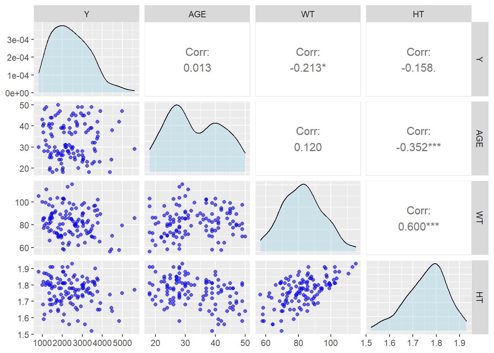
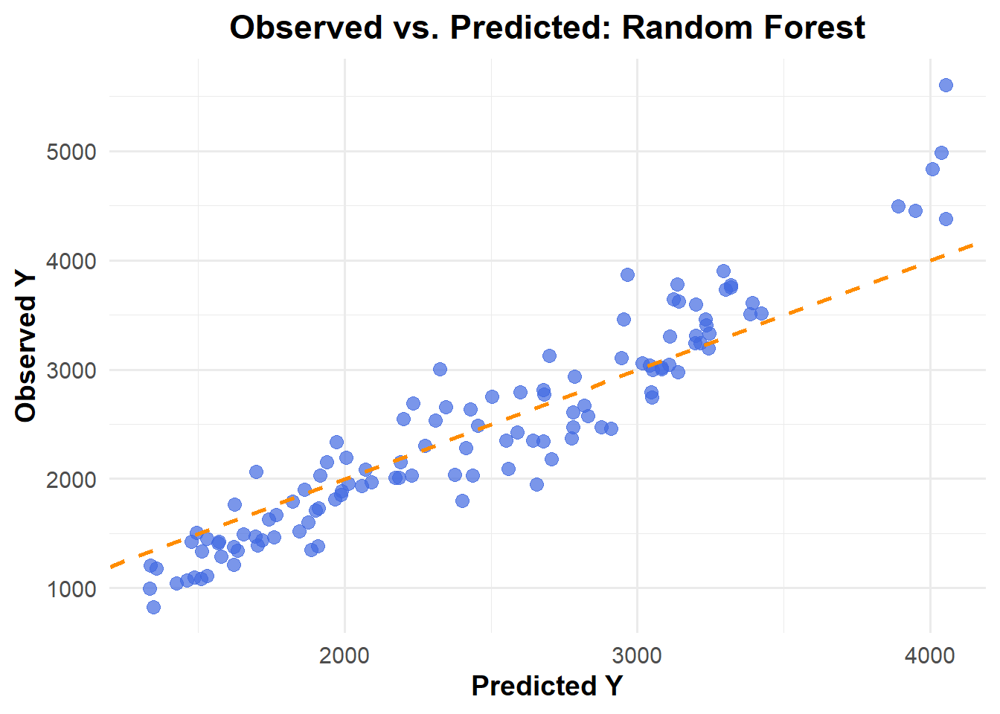
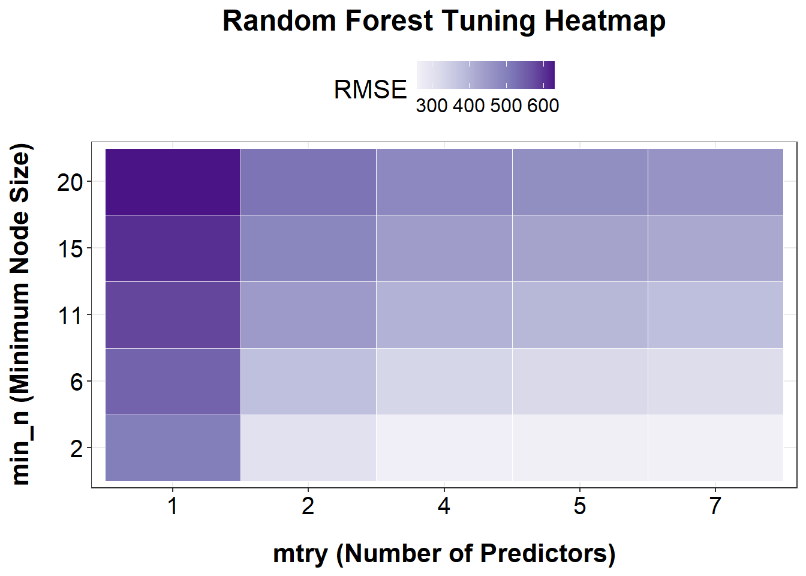
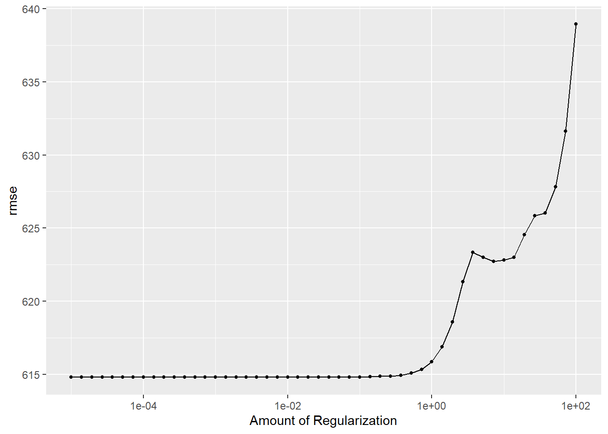

here() starts at C:/Users/mn27712/MADA_NEW/muhammadnasir-mada2025-portofolio
#install.packages("patchwork") # This package is to redefine "/" operator for plot arrangementlibrary(patchwork)#install.packages("writexl")library(writexl)library(haven)#install.packages("ggforce")library(ggforce)#install.packages("dplyr")library(dplyr)library(tidyverse)library(lubridate)#install.packages("ggridges") library(ggridges) #library(forcats)#install.packages("gt")library(gt)#install.packages("gtExtras", dependencies = TRUE)library(gtExtras)#install.packages("gtsummary")library(gtsummary) #install.packages("cli")library(cli)#install.packages("tidymodels")library(tidymodels) # for the parsnip package, along with the rest of tidymodels
#install.packages("broom.mixed")library(broom.mixed) # for converting bayesian models to tidy tibbles#install.packages("dotwhisker")library(dotwhisker) # for visualizing regression results#install.packages("ggcorrplot")library(ggcorrplot)#install.packages("corrplot")library(corrplot)
corrplot 0.95 loaded
#install.packages("ggpubr")# combine plot# Load the librarylibrary(ggpubr)#install.packages("rsample")#install.packages("purrr")library(rsample)library(purrr)#install.packages("glmnet")library(glmnet)
Loading required package: Matrix
Attaching package: 'Matrix'
The following objects are masked from 'package:tidyr':
expand, pack, unpack
Loaded glmnet 4.1-8
Y DOSE AGE SEX RACE
Min. : 826.4 Min. :25.00 Min. :18.00 1:104 1 :74
1st Qu.:1700.5 1st Qu.:25.00 1st Qu.:26.00 2: 16 2 :36
Median :2349.1 Median :37.50 Median :31.00 7 : 2
Mean :2445.4 Mean :36.46 Mean :33.00 88: 8
3rd Qu.:3050.2 3rd Qu.:50.00 3rd Qu.:40.25
Max. :5606.6 Max. :50.00 Max. :50.00
WT HT
Min. : 56.60 Min. :1.520
1st Qu.: 73.17 1st Qu.:1.700
Median : 82.10 Median :1.770
Mean : 82.55 Mean :1.759
3rd Qu.: 90.10 3rd Qu.:1.813
Max. :115.30 Max. :1.930
Data Processing
In this part, I want to recategorize Race Variables. Based on a paper provided in previous week, 1= White, 2= Black, 7= Native American, and 88= Others. In this execercise, 7 and 88 will be combined and label them “3”.
#create data for continous only for Pairwise Pairwise_data <- data_ml %>%select(Y, AGE, WT, HT)#Create Correlation Plot for continus variables Pairwise_data %>%select(Y, AGE, WT, HT) %>%ggpairs(lower =list(continuous =wrap("points", color ="blue", alpha =0.6)),diag =list(continuous =wrap("densityDiag", fill ="lightblue", alpha =0.5)),upper =list(continuous =wrap("cor", size =4)) )

Weight is positively correlated with Height age, age is negatively correlated with height. However,all those variable have either very small correlation or moderate correlatio which is not a big concern for multicolinearity.
#Featuring Engineering In this part, a new variable created for Body Mass Index (BMI) and creating histogram to visualize the BMI.
In this exercise, I am going to create three models including Linear Regression, LASSO Regression, and Random Forest Model.
Linear Regression
# Defining a linear model m1_lm_all <-linear_reg() %>%set_engine("lm") %>%set_mode("regression")m1_lm_all_wf <-workflow() %>%add_model(m1_lm_all) %>%add_formula(Y ~ .)# Fit models on the datalm_fit1 <- m1_lm_all_wf %>%fit(data_ml)#compute predictionpred_lm1 <-predict(lm_fit1, data_ml) %>%bind_cols(data_ml)# calculate RMSE for the modelsrmse_lm1 <-rmse(pred_lm1, truth = Y, estimate = .pred) %>%print()
# A tibble: 1 × 3
.metric .estimator .estimate
<chr> <chr> <dbl>
1 rmse standard 581.
set.seed(rngseed)#create Random Forestm3_rf1 <-rand_forest() %>%set_engine("ranger", seed= rngseed) %>%set_mode("regression")# create wok flowm3_rf1_wf <-workflow() %>%add_model(m3_rf1) %>%add_formula(Y ~ .)#fit model m3_rf1_fit <- m3_rf1_wf %>%fit(data=data_ml)#compute predictionpred_m3_rf1 <-predict(m3_rf1_fit, data_ml) %>%bind_cols(data_ml)# calculate RMSE for the modelsrmse_m3_rf1 <-rmse(pred_m3_rf1, truth = Y, estimate = .pred) %>%print()
# A tibble: 1 × 3
.metric .estimator .estimate
<chr> <chr> <dbl>
1 rmse standard 362.
ggplot(pred_m3_rf1, aes(x = .pred, y = Y)) +geom_point(color ="royalblue", alpha =0.7, size =3) +# Data pointsgeom_abline(slope =1, intercept =0, color ="darkorange", linetype ="dashed", size =1) +# Reference linelabs(title ="Observed vs. Predicted: Random Forest",x ="Predicted Y",y ="Observed Y" ) +theme_minimal(base_size =14) +theme(plot.title =element_text(face ="bold", hjust =0.5),axis.title =element_text(face ="bold") )

Random Forest results the lowest RMSE (361.6) among three models, while RMSE the other two models is same (581.4)
Tunning the model
# create setseedset.seed(1234)#Create a tuning grid (50 values on log scale from 1e-5 to 1e2)grid_lasso <-tibble(penalty=10^seq(-5, 2, length.out=50))# create tunning lassotune_lasso <-linear_reg(penalty=tune()) %>%set_engine("glmnet")# create lasso work flow wf_lasso <-workflow() %>%add_model(tune_lasso) %>%add_formula(Y ~ .)# Tune the LASSO modeltune_result_lasso <- wf_lasso %>%tune_grid(resamples=apparent(data_ml), grid=grid_lasso, metrics=metric_set(yardstick::rmse)) # create matric lasso_tune_result_metric <-as.data.frame(tune_result_lasso$.metrics)# Create plotggplot(lasso_tune_result_metric, aes(x=penalty, y=.estimate)) +geom_line(linewidth=1, color="green") +scale_x_log10() +labs(x ="Log penalty parameter",y ="RMSE",title ="Tuning Results for LASSO Model (RMSE vs Penalty)" ) +theme_bw() +theme(axis.title.x =element_text(size =10, color ="black", margin =margin(t =15), face ="bold"),axis.title.y =element_text(size =10, color ="black", margin =margin(r =15), face ="bold"),axis.text.x =element_text(color ="black", size =10, vjust =0),axis.text.y =element_text(color ="black", size =10, hjust =1), legend.position ="top",legend.title =element_text(size =10), legend.text =element_text(size =10, vjust =0) )
The plot illustrates the tuning results of a LASSO regression model, showing how the root mean squared error (RMSE) varies across a range of penalty (λ) values on a logarithmic scale. As observed, RMSE remains relatively stable and low for smaller penalty values (approximately 10⁻⁵ to 10⁰), indicating good model performance. However, as the penalty increases beyond this range, RMSE rises sharply, suggesting that the model becomes overly regularized and loses predictive accuracy. This trend highlights the importance of selecting an optimal penalty value that balances model complexity and performance, with the best results occurring in the lower penalty region before the RMSE curve begins to escalate.
# Set seedset.seed(1234)# Create tuning gridgrid_rf <-grid_regular(mtry(range =c(1, ncol(data_ml) -1)), # exclude Ymin_n(range =c(2, 20)),levels =5)# Create tunable random forest modeltune_rf <-rand_forest(mtry =tune(), min_n =tune()) %>%set_engine("ranger", seed =1234) %>%set_mode("regression")# Create workflowwf_rf <-workflow() %>%add_model(tune_rf) %>%add_formula(Y ~ .)# Tune the Random Forest model using apparent resampletune_result_rf <- wf_rf %>%tune_grid(resamples =apparent(data_ml),grid = grid_rf,metrics =metric_set(yardstick::rmse) )# Convert tuning results to data framerf_tune_result_metric <-as.data.frame(tune_result_rf$.metrics)# Use the correct RMSE column: .estimaterf_plot_df <- rf_tune_result_metric %>%filter(.metric =="rmse")# create plot ggplot(rf_tune_result_metric %>%filter(.metric =="rmse"), aes(x =factor(mtry), y =factor(min_n), fill = .estimate)) +geom_tile(color ="white") +scale_fill_distiller(name ="RMSE", palette ="Purples", direction =1) +labs(title ="Random Forest Tuning Heatmap",x ="mtry (Number of Predictors)",y ="min_n (Minimum Node Size)" ) +theme_bw() +theme(plot.title =element_text(size =18, face ="bold", hjust =0.5, margin =margin(b =10)),axis.title.x =element_text(size =16, color ="black", margin =margin(t =15), face ="bold"),axis.title.y =element_text(size =16, color ="black", margin =margin(r =15), face ="bold"),axis.text.x =element_text(color ="black", size =15),axis.text.y =element_text(color ="black", size =15),legend.position ="top",legend.title =element_text(size =16),legend.text =element_text(size =12) )

Based on the heatmap of RMSE values from the Random Forest tuning results, the lowest RMSE (i.e., best model performance) is observed in the bottom-right region of the plot — specifically when both mtry is high (5–7) and min_n is small (2–6). This indicates that the model performs best when more predictors are considered at each split (mtry) and the minimum number of samples required to split a node is kept low (min_n). In contrast, model performance worsens (higher RMSE, darker purple) when min_n is large (15–20) and mtry is low (1–2), suggesting that overly simplified trees (due to aggressive pruning or limited variables) reduce predictive accuracy. Thus, tuning should prioritize larger mtry and smaller min_n values for optimal model performance in this case.
Tunning with Cross Validation (CV)
set.seed(rngseed)# 5-fold CVdata_cv <-vfold_cv(data_ml, v=5, repeats=5)# Workflow to tune the parameterlasso_tune_result_cv <- wf_lasso %>%tune_grid(resamples=data_cv, grid=grid_lasso, metrics=metric_set(yardstick::rmse))# Make a plot of tuning resultsautoplot(lasso_tune_result_cv)

As the amount of penalty parameter increase, the RMSE also increase.
Tunning the CB for Random Forest Model
set.seed(rngseed)# Define the model specification using the ranger engine, with fixed trees at 300rf_cv <-rand_forest(mode ="regression",mtry =tune(), min_n =tune(), trees =300) %>%set_engine("ranger", seed = rngseed)# Create a workflowrf_cv_wf <-workflow() %>%add_model(rf_cv) %>%add_formula(Y ~ .)# Perform tuning with tune_grid()rf_cv <-tune_grid( rf_cv_wf,resamples =vfold_cv(data_ml, v =5, repeats =5),grid = grid_rf,metrics =metric_set(rmse),control =control_grid(save_pred =TRUE) )autoplot(rf_cv)